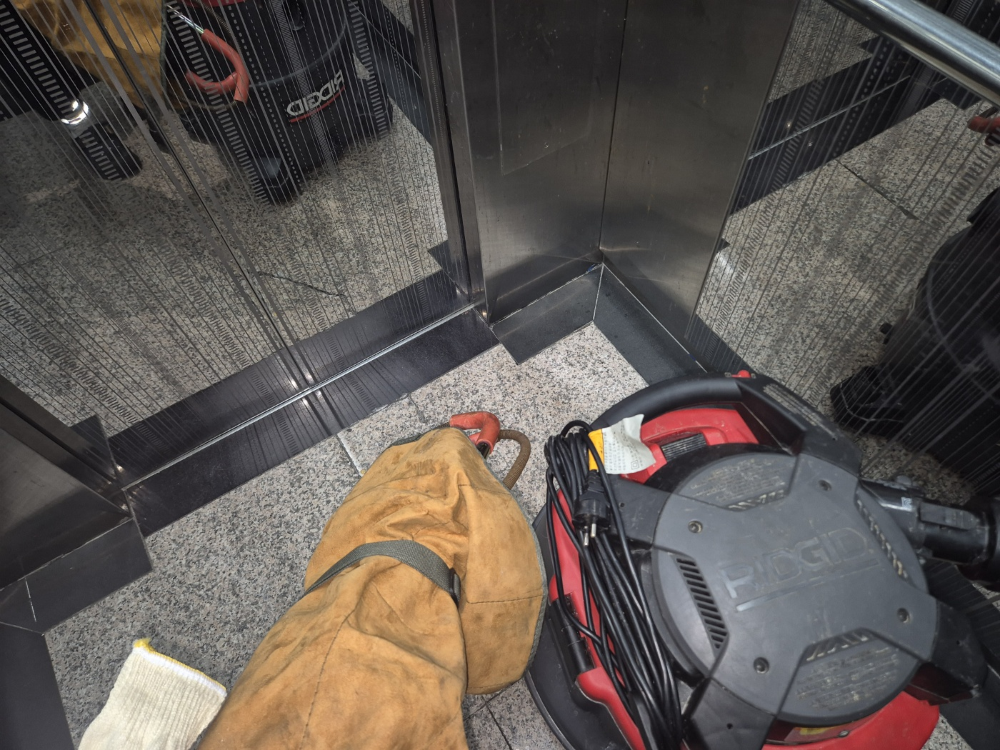
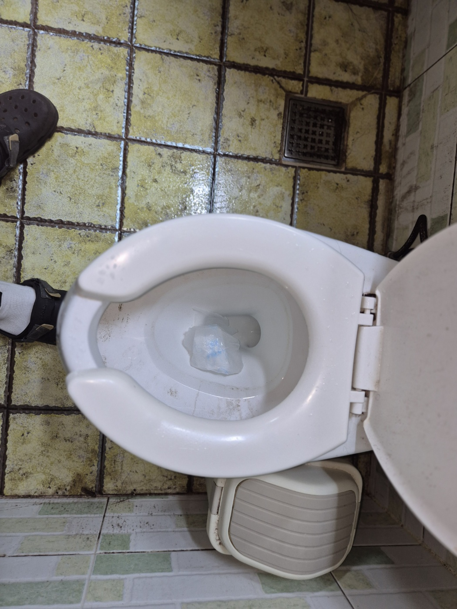
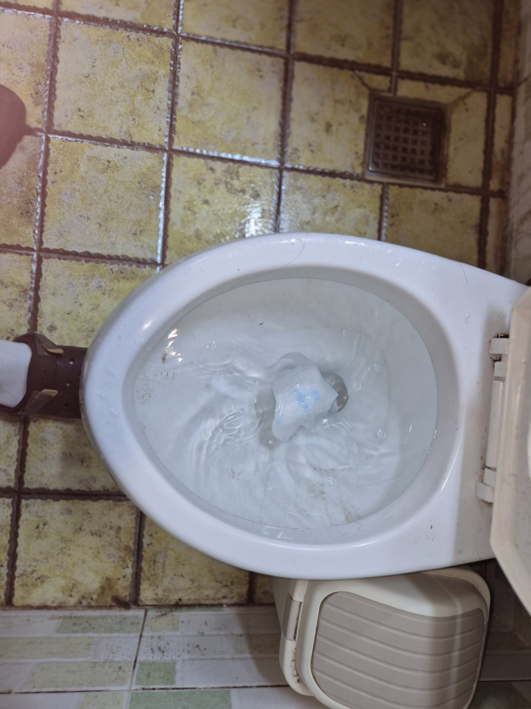
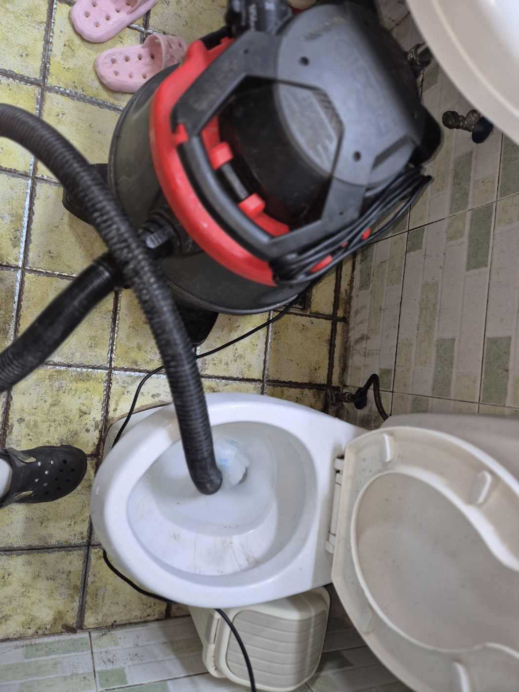
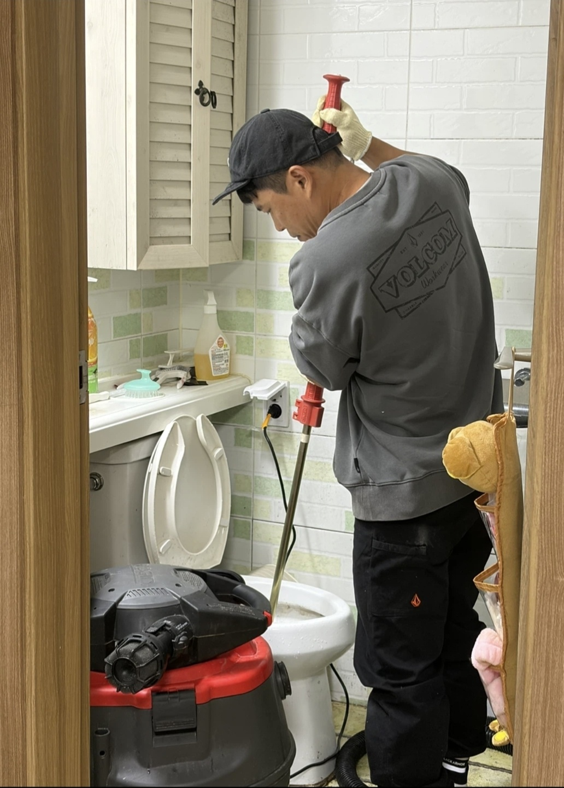
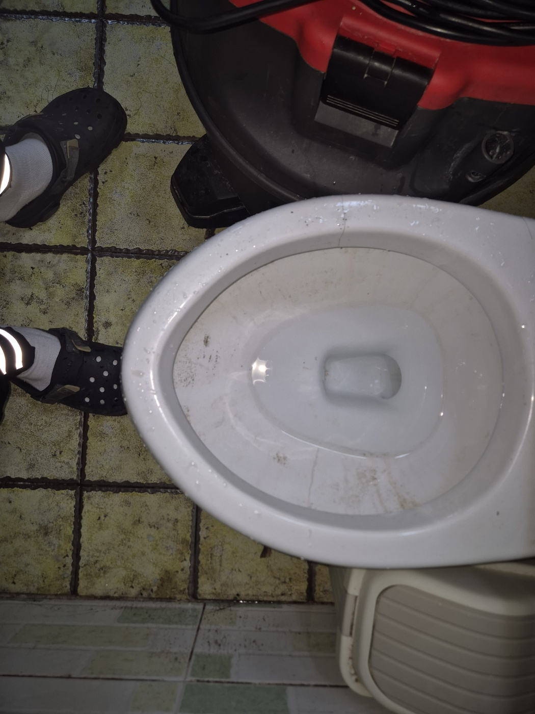

안녕하세요.. 고고고 설비입니다.. 이번에는 천안시 두정동에 있는 원룸에서 변기가 막혔다는 연락을 받고 출동한 현장을 소개해드릴게요. 고객님 말씀으로는 꼬리빗이 변기에 빠진 뒤로 물이 내려가지 않는다고 하셨어요.
원룸 건물에 도착해서 석션기와 샤프트 장비를 엘리베이터에 싣고 올라갔어요. 변기막힘은 장비가 많이 필요한 작업은 아니지만, 정확하게 작업하려면 석션기와 샤프트를 같이 준비해 가는 게 좋더라고요.

화장실에 들어가 보니 변기 안에 이물질이 보였고 물도 제대로 내려가지 않는 상태였어요. 빗처럼 길고 단단한 물건은 변기 안쪽 구부러진 구간에 걸리면 물만 내려서는 절대 해결되지 않아요. 물을 계속 내리면 오히려 바닥으로 넘칠 수 있어서 이럴 땐 그대로 두고 연락 주시는 게 좋습니다.

물을 내려서 상태를 확인해 봤더니 시원하게 빠지지 않고 변기 안에서 빙글빙글 맴돌기만 했어요. 배관 안쪽 어딘가에서 이물질이 걸려 있다는 신호예요.

석션기 호스를 변기에 연결해서 막혀 있던 걸 먼저 빨아들여 봤어요. 변기를 분리하지 않고 작업할 수 있는 방법이라서 변기나 바닥 타일에 손상을 줄 걱정이 없습니다.

석션만으로 부족한 부분은 샤프트로 마무리했어요. 변기 앞에서 샤프트를 천천히 밀어 넣으면서 걸려 있던 위치를 풀어주었습니다. 힘으로 한 번에 밀면 이물질이 더 안쪽으로 밀려 들어갈 수 있어서 감각을 느끼면서 조심스럽게 진행했어요.

작업을 마치고 물을 여러 번 내려서 소용돌이치며 시원하게 내려가는 걸 확인했어요. 처음에 물이 맴돌기만 하던 것과 비교하면 완전히 달라졌죠. 영상으로 직접 확인해 보세요.

변기에 빗, 휴지심, 물티슈 같은 물건이 빠졌다면 물을 계속 내리지 마시고 바로 연락 주세요. 뚫어뻥을 세게 누르면 이물질이 더 안쪽으로 밀려 들어가서 일이 커질 수도 있어요. 변기를 분리하지 않고 해결할 수 있는 경우가 많으니 미리 점검받아 보시는 걸 추천드립니다.
고고고 설비는 주택, 아파트, 원룸, 상가, 공장의 생활 하수 오수 배관을 관리해 주는 업체입니다. 고고고 설비에 전화 주시면 친절상담 정확한 진단 확실한 해결로 보답해 드리겠습니다!!